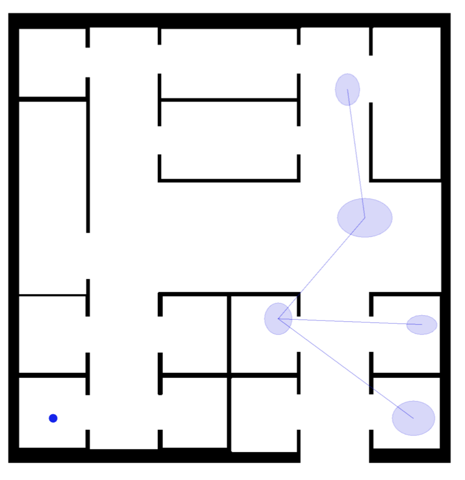
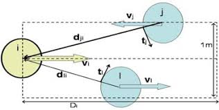
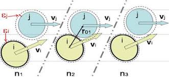

Agenti cognitivi in Alchemist per la simulazione di evacuazioni di folle
Stato dell’arte
OVERVIEW
-
Modello del pedone cognitivo
- Modello IMPACT
- Il pedone cognitivo
- Movimento del pedone cognitivo
-
Modello di mappa mentale per l’orientamento dei pedoni cognitivi
- Grafo dell’ambiente e mappa cognitiva
-
Modello fisico del movimento del pedone cognitivo
- Il modello HiDAC
- Forze di evitamento e repulsione
- Cadute e spinte
-
Simulazione Evacuazione di folla in Piazza San Carlo, Torino
Modello del pedone cognitivo
Il modello IMPACT
- Nasce con l’obiettivo di non limitarsi alle sole leggi fisiche nella modellazione di agenti ma considerare le caratteristiche socio-culturali nonché una componente emotiva fortemente infuenzabile.
Ogni agente è contraddistinto da:
- età (bambino, adulto, anziano);
- sesso (uomo, donna).
Il modello IMPACT
-
Le combinazioni di questi due attributi determinano un insieme di caratteristiche statiche e dinamiche.
-
Le prime si mantengono tali per la durata della simulazione mentre le altre evolvono seguendo i principi del Network Oriented Modelling
| Caratteristiche | |
|---|---|
| STATICHE | ATTIVE |
|
|
Il pedone cognitivo
Esistono tre livelli di dettaglio nella rappresentazione di un pedone:
-
Pedone omogeneo: pedone con una velocità predefinita di camminata e di corsa uguale per tutti;
-
Pedone eterogeneo: pedone con un sesso e un eta assegnati, dai quali saranno determinate velocità, conformità alle regole e attitudine ad aiutare;
-
Pedone cognitivo: pedone eterogeneo con delle emozioni, capace di influenzare e farsi influenzare dagli altri.
Movimento del pedone cognitivo
-
I movimenti del pedone cognitivo in Alchemist seguono i comportamenti di steering introdotti da Reynolds.
-
Hanno la funzione di muovere in maniera autonoma e realistica gli agenti sui quali non si possiede controllo.
-
I comportamenti di steering sono basati sulla semplice formula:
steering = desired_velocity - current_velocity
Modello di mappa mentale per l’orientamento del pedone cognitivo
Mappa mentale del pedone cognitivo
-
Struttura che modella la conoscenza spaziale di ciascun pedone, composta di:
- oggetti: costituiscono tipicamente dei punti di riferimento per il pedone
- relazioni spaziali: connessioni dirette od indirette tra gli oggetti
-
Gli oggetti prendono il nome di landmarks e assieme alle relazioni spaziali costituiscono gli elementi fondamentali per l’orientamento.
Grafo dell’ambiente
- L’ambiente viene modellato mediante un grafo di navigazione G=(V,E)
- V: poligoni convessi rappresentanti le walkable areas
- E: rappresentano le connessioni tra aree
Mappa mentale

Grafo dell’ambiente

Modello fisico del movimento del pedone cognitivo
Il modello HiDAC
Modello a forze sociali di riferimento (Pelechano et al.) .
-
Considerazioni:
- Ogni pedone desidera muoversi con una certa velocità in una determinata direzione
- Nel compiere questo spostamento vuole mantenere una certa distanza dai muri e dagli altri pedoni
-
HiDAC prevede:
-
Uno strato di alto livello, equivalente al modello cognitivo introdotto in Alchemist, che individua il prossimo punto che si vuole raggiungere
-
Uno strato di basso livello che aggiusta il punto d’interesse sulla base di vincoli ed interazioni di natura fisica.
-
Forze di evitamento e di repulsione
- La forza di evitamento è una forza tangenziale con lo scopo di curvare la traiettoria dei pedoni per evitare collisioni tra essi.

- La forza di repulsione entra in gioco quando un pedone si vede occupare la sua area di comfort da un altro pedone
Cadute e spinte
-
E’ possibile far emergere comportamenti di spinte attribuendo soglie di spazio interpersonale differenti a ciascun pedone.
-
La caduta di un pedone si verifica quando la risultante delle forze di repulsione che riceve è sufficientemente grande da fargli perdere l’equilibrio (es. il modulo della forza supera il modulo della velocità in corsa del pedone)

Miglioramenti al simulatore
- Nodi configurabili tramite la composizione di proprietà
- Reificazione del concetto di reazione globale
Simulazione
Evacuazione di folla in Piazza San Carlo, Torino
Descrizione
- In una riproduzione di Piazza San Carlo sono stati posizionati:
- oltre 40,000 nodi cognitivi di eta e generi diversi.
- una zona di pericolo nel punto si presumibilmente ha avuto origine l’isteria di massa.
Descrizione più dettagliata nel sito ufficiale
Simulazione
Risultati
Una volta avviata la simulazione è possibile osservare:
- come il panico si diffonda sulla folla per via del contagio sociale.
- I pedoni che hanno avuto esperienza diretta con il pericolo fuggono spingendo coloro che non hanno ancora visto nulla.
- L’onda, simile a quella osservata nei filmati che ritraggono la tragedia realmente accaduta, derivante dalle spinte dei pedoni in fuga.
Osservazioni
- E’ necessario un tuning della frequenza del motore del simulatore per un’esecuzione in tempo reale della simulazione
- Nella simulazione costruita i pedoni sono sordi e con un campo visivo “statico”
Possibili sviluppi futuri
- Attribuire una forma più realistica ed eterogenea ai pedoni
- Predisporre il simulatore per gestire anche gli ostacoli mobili
- Considerare differenze culturali tra i vari pedoni